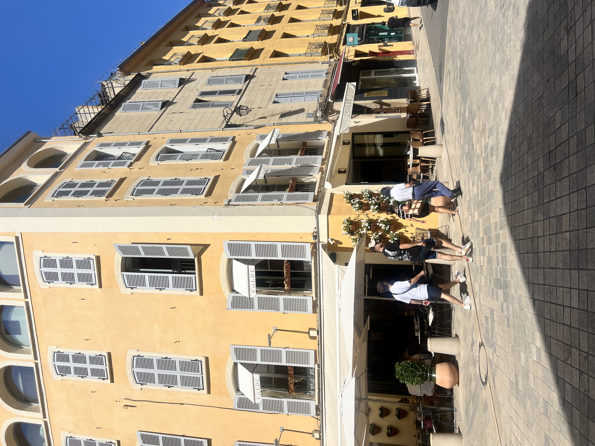
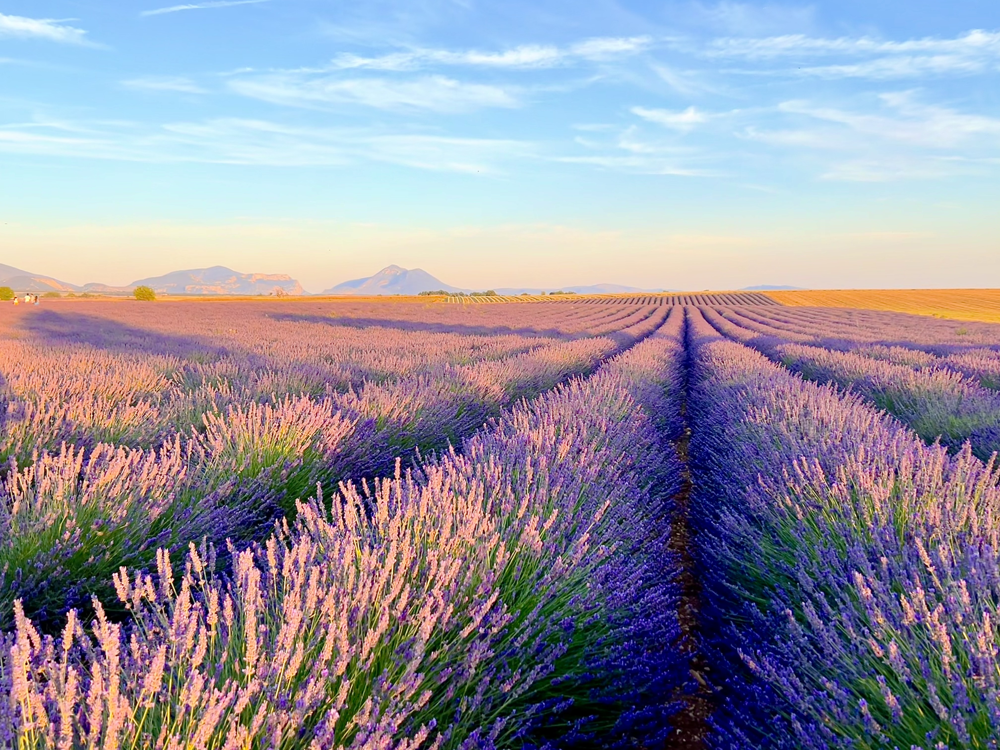

Aix-en-Provence is what people imagine when they romanticize the South of France. Elegant boulevards lined with plane trees, Renaissance fountains gurgling on every corner, outdoor cafes where students and retirees debate over espresso. This is Provence refined—less rough edges than Marseille, more substance than the tourist-trap villages. It's a university town with intellectual credibility and enough style to feel sophisticated without being stuffy.
The Cours Mirabeau is the heart of the city—a wide boulevard where locals stroll, shop, and see-and-be-seen. The markets (especially Saturday morning) overflow with lavender, olive oil, cheese, and produce that looks too beautiful to eat. Paul Cézanne was born here, and his obsession with nearby Mont Sainte-Victoire is understandable once you see the light. Aix is the perfect Provence base: cultured enough to entertain you, central enough for day trips, small enough to feel manageable.
Gallery


Where to Stay
Near Cours Mirabeau puts you in the center of everything—cafes, markets, shops, and the old town (Vieil Aix). More expensive but incredibly walkable. You'll be living that refined Provence fantasy.
Old Town (Vieil Aix) has charming boutique hotels in 17th-century buildings. Narrow streets, fountain squares, fewer tourists in the evenings. Slightly quieter but still central.
Budget option: Aix has good Airbnb options and a few decent hostels. The city is small enough that even staying on the outskirts won't inconvenience you much. Just make sure you're within walking distance or near a bus line.
Where to Eat
For cafe culture: This is Aix's specialty. Les Deux Garçons on Cours Mirabeau is the most famous (Cézanne, Picasso, and Hemingway all sat here), but it's tourist-packed and overpriced. Better to find a smaller cafe on a side street where locals read the newspaper for hours over a single espresso.
For Provençal food: Le Formal and La Table du Pigonnet serve refined takes on regional cuisine—ratatouille, lamb with herbes de Provence, bouillabaisse when available. Not cheap, but this is where Aix shows its culinary sophistication.
For markets: Don't skip the markets. Tuesday, Thursday, and Saturday mornings bring vendors selling everything from cheese to lavender honey to rotisserie chicken. Grab supplies for a picnic and head to Parc Jourdan or up to Sainte-Victoire mountain.
For pastries: Calissons d'Aix are the local specialty—diamond-shaped candies made from almond paste and candied melon. They're everywhere, but Confiserie du Roy René is the best producer. Sweet, subtle, and uniquely Aixois.
What to Do
Wander Cours Mirabeau. Aix's main boulevard is beautiful—17th-century mansions, plane trees, cafes, and fountains including the moss-covered Fontaine d'Eau Chaude with naturally warm water. Walk it multiple times at different hours. Morning for market shoppers, afternoon for students, evening for aperitivo.
Visit Atelier Cézanne. The artist's preserved studio on the northern edge of town is modest but atmospheric. You can see where he painted Mont Sainte-Victoire obsessively (he did it over 80 times). It's a pilgrimage site for art lovers, less interesting if you're not a Cézanne fan.
Follow the Cézanne Trail. Bronze plaques in the sidewalk mark a self-guided walking tour of places connected to the painter. It covers the entire old town and gives structure to aimless wandering. Download the map from the tourist office.
Explore the markets. Tuesday, Thursday, and Saturday bring fresh produce markets. Tuesday and Saturday also have flower markets and antique/flea markets. It's where Aix shows its Provençal roots—noisy, colorful, full of people arguing over the ripeness of melons.
Day trip to Sainte-Victoire. Cézanne's muse mountain is visible from all over Aix. Drive or take a bus to the base and hike up (various trails, ranging from easy to challenging). The views over Provence are spectacular, and you'll understand why Cézanne couldn't stop painting it.
Shop and boutique-hop. Aix has excellent shopping—independent boutiques, antique stores, lavender soap shops, wine stores. It's more refined than Marseille, less touristy than smaller Provence villages. Rue Marius Reinaud and surrounding streets are good for browsing.
Sample Itinerary
Day 1: Morning market on Cours Mirabeau, coffee and people-watching, explore Vieil Aix and its fountains, lunch from market vendors, afternoon at Atelier Cézanne, evening aperitivo on a cafe terrace.
Day 2: Day trip to Marseille (30 min by train)—Vieux-Port, Le Panier, bouillabaisse for lunch, return to Aix for dinner.
Day 3: Drive or bus to Sainte-Victoire for hiking, picnic with market supplies, afternoon exploring smaller streets and boutiques, dinner at a Provençal restaurant.
A Few of My Favorite Spots
- Cours Mirabeau for cafe culture
- Saturday morning markets
- Atelier Cézanne for art history
- Old town fountains
- Day trips to Sainte-Victoire mountain
Practical Information
Getting there: Aix has a TGV station (Aix-en-Provence TGV) that's actually 15km outside town—you'll need a shuttle bus or taxi to reach the center. The older station (Aix-en-Provence Centre) is much closer but serves regional trains only.
Getting around: Aix is small and walkable. You won't need a car unless you're taking day trips to villages or Sainte-Victoire. Buses connect to Marseille, Cassis, and nearby towns.
When to visit: Spring (April-May) brings perfect weather and fewer crowds. Summer is hot and touristy. September is lovely—harvest season, warm days, quieter streets. Winter is mild but some restaurants close.
Markets: Saturday is the biggest market day. Get there early (8-9am) before the best produce disappears. Bring cash—many vendors don't take cards.
Day trips: Aix is perfectly positioned for exploring Provence. Marseille (30 min), Cassis (45 min), Arles (1 hour), Avignon (1 hour), Luberon villages (30-60 min). Rent a car for maximum flexibility, or use buses and trains for major towns.